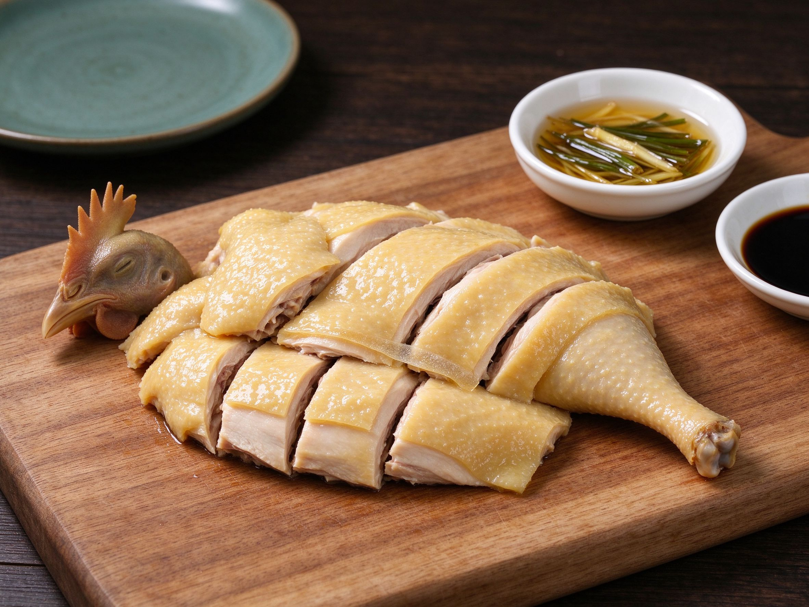

White Cut Chicken (Bai Qie Ji): Cantonese Poached Chicken Done Right
White cut chicken is the dish Cantonese cooks use to judge each other. There is no sauce to hide behind, no searing, no colour — just a bird poached in barely-simmering water, chopped, and served with ginger-scallion oil. If the chicken is dry, the skin is loose, or the meat has no sweetness of its own, everyone at the table knows instantly. Which makes it the best technique lesson in the cuisine.
What "White Cut" Means
Bai qie ji literally means white-cut chicken: the bird is cooked in water and cut, nothing else. The "white" refers to the absence of browning and of heavy sauce. In Guangdong it's a fixture of family dinners, festival tables and every decent Cantonese restaurant's cold-platter section. The version most home cooks should aim for is the Shunde/Guangzhou style: pale, glossy skin, meat just set at the bone, served at room temperature or slightly cool.
The One Rule: A Shiver, Not a Boil
A rolling boil contracts muscle fibres and drains the bird. The water should sit at 88–92 °C — visible movement at the surface, small bubbles rising, but no violent bubbling. If you don't have a thermometer, look for the point where the surface trembles and a few bubbles climb continuously. That is the temperature that keeps the meat silky.
Ingredients
- 1 whole chicken, 1.3–1.6 kg (a free-range bird is worth it here — this dish has no sauce to compensate)
- 40 g fresh ginger, half sliced for the pot, half grated for the oil
- 4 spring onions: two in the pot, two finely sliced for the oil
- 2 tbsp Shaoxing wine (optional)
- 1 tbsp salt for the poaching water
- Ginger-scallion oil: 4 tbsp grated ginger, 4 tbsp finely sliced spring onion (white and green), 1/2 tsp salt, 6 tbsp neutral oil heated to about 180 °C
- Dipping sauce: 2 tbsp light soy, 1 tsp sesame oil, a pinch of sugar, a splash of the poaching liquid
Method
- Bring a pot large enough to submerge the bird to a boil with water, the sliced ginger, the two spring onions, salt and wine. Then lower the heat until it's trembling, not boiling.
- Lower the chicken in, breast up. Hold it by the legs and dip it three times — in for ten seconds, out for five — so the cavity fills and the skin sets evenly.
- Poach covered, off the boil. For a 1.5 kg bird, 30–35 minutes at 88–92 °C. Turn it once halfway, and keep the water at that shiver the whole time. If the pot starts bubbling hard, add a cup of cold water.
- Check doneness properly. A thermometer in the thickest part of the thigh should read 75–80 °C, and the juices at the hip joint should run clear, not pink. An instant-read thermometer is the difference between safe and lucky.
- Ice bath. Lift the bird straight into a bowl of ice water for 10–15 minutes. This stops the cooking and tightens the skin — the "crystal skin" texture that defines the dish. Don't skip it.
- Rest, then chop. Pat dry, rub the skin with a little sesame oil for gloss, and rest 15 minutes. Chop through the bone into bite-size pieces with a heavy cleaver, or joint it if you don't have one.
- Make the oil. Heap the grated ginger, sliced spring onion and salt in a heatproof bowl. Heat the oil until it shimmers, pour it over in one go, and stir — it should sizzle loudly. Let it cool to warm.
Two Ways to Serve It
- Ginger-scallion oil — the classic. Spoon it over each piece at the table, not in the kitchen; the raw allium bite fades fast once it sits on warm chicken.
- Soy-sesame dip — for people who want salt and umami: light soy, sesame oil, sugar, poaching broth. Keep light and dark soy straight here; dark soy would muddy the pale plate.
Where People Go Wrong
- Boiling. The single most common failure. A boiled bird is stringy and grey at the bone.
- Undercooking to keep it "tender." Bai qie ji is served just-set, not raw. Pink meat at the joint is a health risk, not a point of pride — check with a thermometer, not with hope.
- Skipping the ice bath. You'll get flabby skin and a bird that keeps cooking on the board.
- Cheap chicken. This dish is a showcase for the ingredient. A supermarket broiler will taste like nothing, however perfect the poach.
- Chopping cold. Let it rest so the juices settle, or the board will be a puddle and the meat dry.
Once you've poached one bird at the right temperature, you've learned something that applies to every whole-bird dish in Chinese cooking — from steamed fish to salt-baked chicken. Restraint, in this cuisine, is the technique.